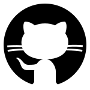

Om mig
Jeg er en passioneret multimediestuderende med fokus på frontend-udvikling og digitalt design.
Jeg søger en praktikplads, hvor jeg kan udvikle mig som frontend-udvikler og arbejde med HTML, CSS og JavaScript til at bygge brugervenlige og responsive webløsninger. Jeg har erfaring med Astro til hurtige, statiske og dynamiske webprojekter og har også arbejdet med Node.js til backend-udvikling og API-integrationer. På sigt kommer jeg til at dykke mere ned i React og Next.js som en del af min uddannelse.
Jeg er på udkig efter en virksomhed, hvor jeg kan lære endnu mere om webteknologier, animationer og forbedring af brugeroplevelser. Ud over mit studie interesserer jeg mig for 3D-webudvikling med Three.js og eksperimenterer i min fritid med at skabe interaktive visuelle oplevelser i browseren.
Mit mål i en praktik er at blive en endnu skarpere frontend-udvikler og lære mere om webteknologier, animationer
og forbedring af brugeroplevelser. Jeg trives bedst i et miljø, hvor jeg kan dykke ned i koden og udvikle
gennemførte webløsninger og applikationer.
Kvalifikationer


- 


 22 23 25 39
22 23 25 39